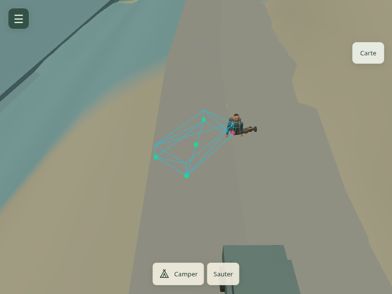
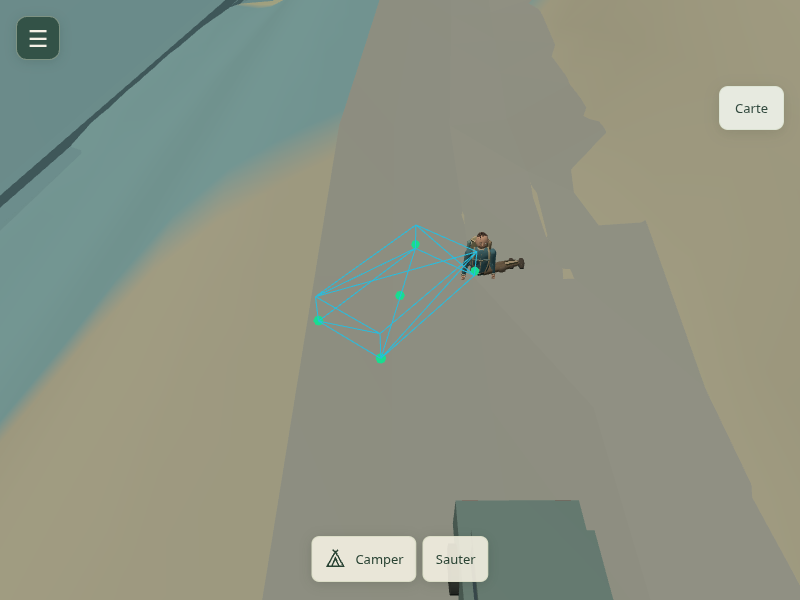

Capture valide techniquement ; perceptif NON VALIDÉ. FPS 0.29 ; durée murale 27.6 s ; simulée 2.01 s.
Original natif · Paramètres, matrices et mesures
framesFile transformsFile beforeImage afterImageVerdict PARTIEL. Les échecs et limites sont conservés. Aucun matériel GPU/Android ni naturel perceptif validé. Les films SwiftShader sont des traces natives à faible cadence ; les voyages accélérés mesurent les contrôleurs, les bancs isolés mesurent séparément le coût.
Filtre :
| ID | Critère | Statut | Preuves / limites |
|---|---|---|---|
| A01 | Voiture80km et D749 | ATTEINT | Vallee-source-roundtrip-car-80km-car.json · geometry-comparison.json · geometry-comparison.svg · reference-checked-d749-overlay.png · phase-checked-d749-overlay.png No inferred distance from road graph. Original driver omitted posttrip after80km; only actually recorded parking/walk is accepted. |
| A02 | Voiture40km, sortie/marche et carrefour | ATTEINT | Vallee-stop-car-40km-car.json · Chauvigny-junction-local-600m-car.json Chauvigny local refusal remains separately visible; success elsewhere does not close it. |
| A03 | Nouvelle rivière>=1km dans un sens | ATTEINT | river-5-authored.json · clain-source-ends.json · bank-source-candidates.json No return, lake loop or checked graph length counts. Unknown bridge clearance remains closed. Bathymetry estimated. |
| A04 | Pagaie, remous et sillage | PARTIEL | candidate-authored-native.json · candidate-water-native.json · candidate-matched-native.json Numerical contact-frame correction proven; visual coherence, boat turns and LOD need readable hardware review. |
| A05 | Marche naturelle | PARTIEL | final-physical-gait.json · mechanical-comparison.json · candidate-matched-native.json No perceptual validation under software cadence; angular acceleration peaks remain, startup can worsen. |
| A06 | Course naturelle | PARTIEL | final-physical-gait.json · mechanical-comparison.json · candidate-matched-native.json Steady run numerical improvement does not erase adverse startup peaks or validate naturalness. |
| A07 | Oiseaux vivants | PARTIEL | reference-matched-native.json · candidate-matched-native.json No bird visibility forced; instance counts do not establish on-screen natural flight. |
| A08 | Ombres des troncs et du sol | PARTIEL | reference-matched-native.json · candidate-matched-native.json Same trunk-root motion fixes one discrepancy. Temporal shimmer/pixel quality not validated. |
| A09 | Ombres du monde et coût | PARTIEL | performance.json · reference-matched-native.json · candidate-matched-native.json No global shadow cure or<=5percent performance claim; actual matrices/profiles exported. |
| A10 | Streaming et chargements | PARTIEL | streaming-network-corrected.json · performance.json Measured long preparation steps remain outside thresholds; waiting and rendering costs separated. |
| A11 | Performance et endurance | PARTIEL | performance.json · cpu-isolated.json · endurance-authored-final.json Final native30min covers driving, a foot exit/return and map. Nine tiles loaded but zero evictions observed; no leak-free or eviction-endurance conclusion. GPU and robust frame budgets unproven. |
| A12 | Acquis pédestres M26.3 | ATTEINT | Chauvigny-foot-21km-foot.json · spawn-east-dense-avoid-water-foot.json · seam-strips.json · seam-strips-longitudinal-2m.json · offroad-complete.json Failed longitudinal2m attempt retained; final road uses original4m phase. Final seam source91 is explicit, active road/foot modules identical to finald162; intermediate ff8 also retained. |
| A13 | Activités, interface et préservation | PARTIEL | fixture.json · map-ui.json · reload-corrected.json · preservation.json Unit/fixture checks and map emulation do not replace every native activity or a physical Android test. Train/plane source-access policy unchanged. |
| A14 | Livraison et Git | PARTIEL | verification.json · preservation.json · REPRODUCTION.md No merge/deployment/purchase/workflow change; A14 never implies global acceptance. |
Superpositions à l’arrêt, diagnostic uniquement. La ligne cyan est la coque ; les points refusés restent rouges. Le relief du talus et les seuils sont conservés.


Triangles et supports, comparaison vectorielle
Les FPS affichés sont ceux des prises sous charge fonctionnelle concurrente. Pas de validation artistique. L’indexation conserve les paquets encodés et leurs timestamps.
Avant/après : même station et configuration demandée. L’atmosphère sensible et certaines matrices restent différentes ; aucun verdict artistique ou ratio≤5% déduit de ces prises.
| Scène / profil | Avant | Après |
|---|---|---|
| forest-birds-shadows / balanced | Film b5a4f98c | Film 30d3bcde |
| forest-birds-shadows / eco | Film b5a4f98c | Film 30d3bcde |
| forest-birds-shadows / quality | Film b5a4f98c | Film 30d3bcde |
| pilot-water / balanced | Film b5a4f98c | Film d162a653 |
| river-shadows / balanced | Film b5a4f98c | Film 91f4f53b |
| river-shadows / quality | Film b5a4f98c | Film 91f4f53b |
| run-four-views / balanced | Film b5a4f98c | Film 30d3bcde |
| run-slope-four-views / balanced | Film b5a4f98c | Film 30d3bcde |
| trunk-approach / balanced | Film b5a4f98c | Film 91f4f53b |
| trunk-approach / quality | Film b5a4f98c | Film 91f4f53b |
| village-shadows / balanced | Film b5a4f98c | Film 30d3bcde |
| village-shadows / quality | Film b5a4f98c | Film 30d3bcde |
| walk-four-views / balanced | Film b5a4f98c | Film 30d3bcde |
| walk-slope-four-views / balanced | Film b5a4f98c | Film 30d3bcde |
Différences réelles de climat, caméra et ombre
Capture valide techniquement ; perceptif NON VALIDÉ. FPS 0.29 ; durée murale 27.6 s ; simulée 2.01 s.
Original natif · Paramètres, matrices et mesures
framesFile transformsFile beforeImage afterImageCapture valide techniquement ; perceptif NON VALIDÉ. FPS 0.77 ; durée murale 31.34 s ; simulée 5.78 s.
Original natif · Paramètres, matrices et mesures
framesFile transformsFile beforeImage afterImageCapture valide techniquement ; perceptif NON VALIDÉ. FPS 0.6 ; durée murale 31.43 s ; simulée 4.76 s.
Original natif · Paramètres, matrices et mesures
framesFile transformsFile beforeImage afterImageCapture valide techniquement ; perceptif NON VALIDÉ. FPS 0.75 ; durée murale 32.17 s ; simulée 6.01 s.
Original natif · Paramètres, matrices et mesures
framesFile transformsFile beforeImage afterImageCapture valide techniquement ; perceptif NON VALIDÉ. FPS 0.87 ; durée murale 32.02 s ; simulée 6.78 s.
Original natif · Paramètres, matrices et mesures
framesFile transformsFile beforeImage afterImageCapture valide techniquement ; perceptif NON VALIDÉ. FPS 0.91 ; durée murale 19.74 s ; simulée 4.15 s.
Original natif · Paramètres, matrices et mesures
framesFile transformsFile beforeImage afterImageCapture valide techniquement ; perceptif NON VALIDÉ. FPS 0.38 ; durée murale 23.43 s ; simulée 1.98 s.
Original natif · Paramètres, matrices et mesures
framesFile transformsFile beforeImage afterImageCapture valide techniquement ; perceptif NON VALIDÉ. FPS 0.31 ; durée murale 22.23 s ; simulée 1.75 s.
Original natif · Paramètres, matrices et mesures
framesFile transformsFile beforeImage afterImageCapture incomplète/invalide ; perceptif NON VALIDÉ. FPS inconnu ; durée murale 0 s ; simulée 0 s. Error: Command failed: ffmpeg -v error -y -i docs/mission-26-4-evidence/visual-regressions/raw/candidate-matched-trunk-approach-balanced.webm -c copy docs/mission-26-4-evidence/visual-regressions/candidate-matched-trunk-approach-balanced.webm [matroska,webm @ 0x55896fa872c0] EBML header parsing failed [in#0 @ 0x55896fa87000] Error opening input: Invalid data found when processing input Error opening input file docs/mission-26-4-evidence/visual-regressions/raw/candidate-matched-trunk-approach-balanced.webm. Error opening input files: Invalid data found when processing input
beforeImageCapture incomplète/invalide ; perceptif NON VALIDÉ. FPS inconnu ; durée murale 0 s ; simulée 0 s. Error: Command failed: ffmpeg -v error -y -i docs/mission-26-4-evidence/visual-regressions/raw/candidate-matched-trunk-approach-quality.webm -c copy docs/mission-26-4-evidence/visual-regressions/candidate-matched-trunk-approach-quality.webm [matroska,webm @ 0x5583b3fcf2c0] EBML header parsing failed [in#0 @ 0x5583b3fcf000] Error opening input: Invalid data found when processing input Error opening input file docs/mission-26-4-evidence/visual-regressions/raw/candidate-matched-trunk-approach-quality.webm. Error opening input files: Invalid data found when processing input
beforeImageCapture valide techniquement ; perceptif NON VALIDÉ. FPS 0.19 ; durée murale 10.62 s ; simulée 0.51 s.
Original natif · Paramètres, matrices et mesures
framesFile transformsFile beforeImage afterImageCapture incomplète/invalide ; perceptif NON VALIDÉ. FPS inconnu ; durée murale 0 s ; simulée 0 s. Error: Command failed: ffmpeg -v error -y -i docs/mission-26-4-evidence/visual-regressions/raw/candidate-matched-river-shadows-quality.webm -c copy docs/mission-26-4-evidence/visual-regressions/candidate-matched-river-shadows-quality.webm [matroska,webm @ 0x55e7ecb622c0] EBML header parsing failed [in#0 @ 0x55e7ecb62000] Error opening input: Invalid data found when processing input Error opening input file docs/mission-26-4-evidence/visual-regressions/raw/candidate-matched-river-shadows-quality.webm. Error opening input files: Invalid data found when processing input
beforeImageCapture valide techniquement ; perceptif NON VALIDÉ. FPS 0.22 ; durée murale 18.02 s ; simulée 1.06 s.
Original natif · Paramètres, matrices et mesures
framesFile transformsFile beforeImage afterImageCapture valide techniquement ; perceptif NON VALIDÉ. FPS 0.21 ; durée murale 14.55 s ; simulée 0.7 s.
Original natif · Paramètres, matrices et mesures
framesFile transformsFile beforeImage afterImageCapture valide techniquement ; perceptif NON VALIDÉ. FPS 0.37 ; durée murale 24.17 s ; simulée 2.21 s.
Original natif · Paramètres, matrices et mesures
framesFile transformsFile beforeImage afterImageCapture valide techniquement ; perceptif NON VALIDÉ. FPS 0.3 ; durée murale 19.84 s ; simulée 1.42 s.
Original natif · Paramètres, matrices et mesures
framesFile transformsFile beforeImage afterImageCapture valide techniquement ; perceptif NON VALIDÉ. FPS 0.33 ; durée murale 21.0 s ; simulée 1.74 s.
Original natif · Paramètres, matrices et mesures
framesFile transformsFile beforeImage afterImageCapture valide techniquement ; perceptif NON VALIDÉ. FPS 0.25 ; durée murale 24.21 s ; simulée 1.51 s.
Original natif · Paramètres, matrices et mesures
framesFile transformsFile beforeImage afterImageCapture valide techniquement ; perceptif NON VALIDÉ. FPS 0.27 ; durée murale 22.56 s ; simulée 1.51 s.
Original natif · Paramètres, matrices et mesures
framesFile transformsFile beforeImage afterImageCapture valide techniquement ; perceptif NON VALIDÉ. FPS 0.33 ; durée murale 24.14 s ; simulée 1.95 s.
Original natif · Paramètres, matrices et mesures
framesFile transformsFile beforeImage afterImageCapture valide techniquement ; perceptif NON VALIDÉ. FPS 0.55 ; durée murale 31.0 s ; simulée 4.23 s.
Original natif · Paramètres, matrices et mesures
framesFile transformsFile beforeImage afterImageCapture valide techniquement ; perceptif NON VALIDÉ. FPS 0.53 ; durée murale 32.07 s ; simulée 4.27 s.
Original natif · Paramètres, matrices et mesures
framesFile transformsFile beforeImage afterImageCapture valide techniquement ; perceptif NON VALIDÉ. FPS 0.25 ; durée murale 27.67 s ; simulée 1.76 s.
Original natif · Paramètres, matrices et mesures
framesFile transformsFile beforeImage afterImageCapture valide techniquement ; perceptif NON VALIDÉ. FPS 0.26 ; durée murale 31.2 s ; simulée 2.01 s.
Original natif · Paramètres, matrices et mesures
framesFile transformsFile beforeImage afterImageCapture valide techniquement ; perceptif NON VALIDÉ. FPS 0.26 ; durée murale 19.48 s ; simulée 1.23 s.
Original natif · Paramètres, matrices et mesures
framesFile transformsFile beforeImage afterImageCapture valide techniquement ; perceptif NON VALIDÉ. FPS 0.18 ; durée murale 22.79 s ; simulée 1.0 s.
Original natif · Paramètres, matrices et mesures
framesFile transformsFile beforeImage afterImageCapture valide techniquement ; perceptif NON VALIDÉ. FPS 0.2 ; durée murale 20.02 s ; simulée 1.01 s.
Original natif · Paramètres, matrices et mesures
framesFile transformsFile beforeImage afterImageCapture incomplète/invalide ; perceptif NON VALIDÉ. FPS inconnu ; durée murale 0 s ; simulée 0 s. Error: Command failed: ffmpeg -v error -y -i docs/mission-26-4-evidence/visual-regressions/raw/reference-matched-trunk-approach-balanced.webm -c copy docs/mission-26-4-evidence/visual-regressions/reference-matched-trunk-approach-balanced.webm [matroska,webm @ 0x556f21cbb2c0] EBML header parsing failed [in#0 @ 0x556f21cbb000] Error opening input: Invalid data found when processing input Error opening input file docs/mission-26-4-evidence/visual-regressions/raw/reference-matched-trunk-approach-balanced.webm. Error opening input files: Invalid data found when processing input
beforeImageCapture valide techniquement ; perceptif NON VALIDÉ. FPS 0.15 ; durée murale 20.48 s ; simulée 0.76 s.
Original natif · Paramètres, matrices et mesures
framesFile transformsFile beforeImage afterImageCapture valide techniquement ; perceptif NON VALIDÉ. FPS 0.17 ; durée murale 11.6 s ; simulée 0.51 s.
Original natif · Paramètres, matrices et mesures
framesFile transformsFile beforeImage afterImageCapture incomplète/invalide ; perceptif NON VALIDÉ. FPS inconnu ; durée murale 0 s ; simulée 0 s. Error: Command failed: ffmpeg -v error -y -i docs/mission-26-4-evidence/visual-regressions/raw/reference-matched-river-shadows-quality.webm -c copy docs/mission-26-4-evidence/visual-regressions/reference-matched-river-shadows-quality.webm [matroska,webm @ 0x55b4929142c0] EBML header parsing failed [in#0 @ 0x55b492914000] Error opening input: Invalid data found when processing input Error opening input file docs/mission-26-4-evidence/visual-regressions/raw/reference-matched-river-shadows-quality.webm. Error opening input files: Invalid data found when processing input
beforeImageCapture valide techniquement ; perceptif NON VALIDÉ. FPS 0.27 ; durée murale 11.07 s ; simulée 0.75 s.
Original natif · Paramètres, matrices et mesures
framesFile transformsFile beforeImage afterImageCapture valide techniquement ; perceptif NON VALIDÉ. FPS 0.26 ; durée murale 11.49 s ; simulée 0.75 s.
Original natif · Paramètres, matrices et mesures
framesFile transformsFile beforeImage afterImageCapture valide techniquement ; perceptif NON VALIDÉ. FPS 0.27 ; durée murale 21.99 s ; simulée 1.43 s.
Original natif · Paramètres, matrices et mesures
framesFile transformsFile beforeImage afterImageCapture valide techniquement ; perceptif NON VALIDÉ. FPS 0.26 ; durée murale 23.2 s ; simulée 1.41 s.
Original natif · Paramètres, matrices et mesures
framesFile transformsFile beforeImage afterImageCapture valide techniquement ; perceptif NON VALIDÉ. FPS 0.28 ; durée murale 28.86 s ; simulée 1.92 s.
Original natif · Paramètres, matrices et mesures
framesFile transformsFile beforeImage afterImageCapture valide techniquement ; perceptif NON VALIDÉ. FPS 0.22 ; durée murale 26.76 s ; simulée 1.5 s.
Original natif · Paramètres, matrices et mesures
framesFile transformsFile beforeImage afterImageCapture valide techniquement ; perceptif NON VALIDÉ. FPS 0.21 ; durée murale 29.17 s ; simulée 1.5 s.
Original natif · Paramètres, matrices et mesures
framesFile transformsFile beforeImage afterImageUne erreur de protocole n’est pas une collision prouvée ; une composante préparée n’est pas une navigation. Les prototypes et refus sont consultables avec leur SHA réel.